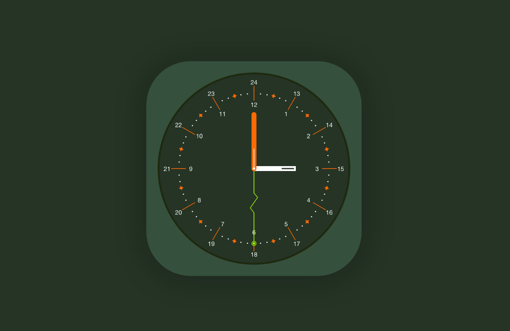
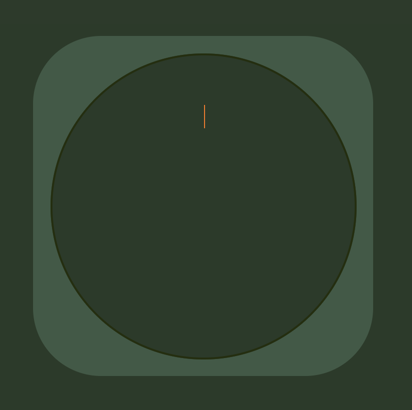
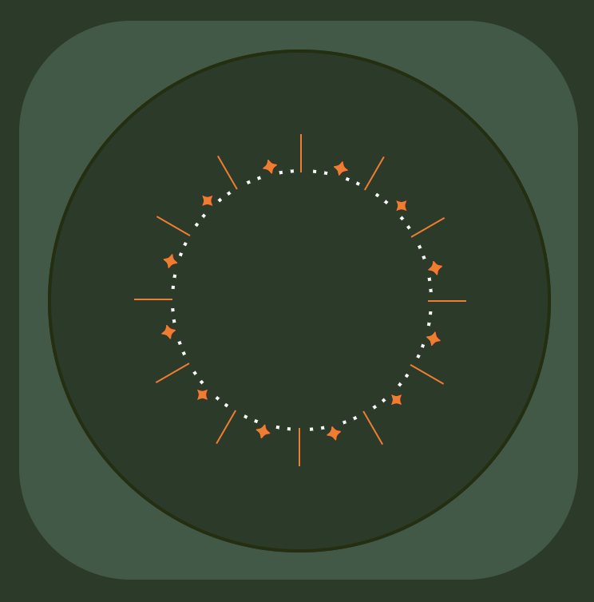
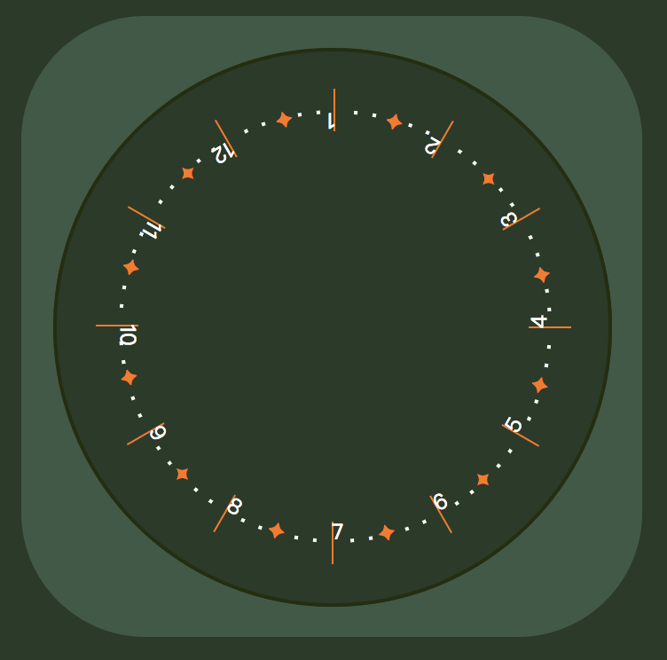
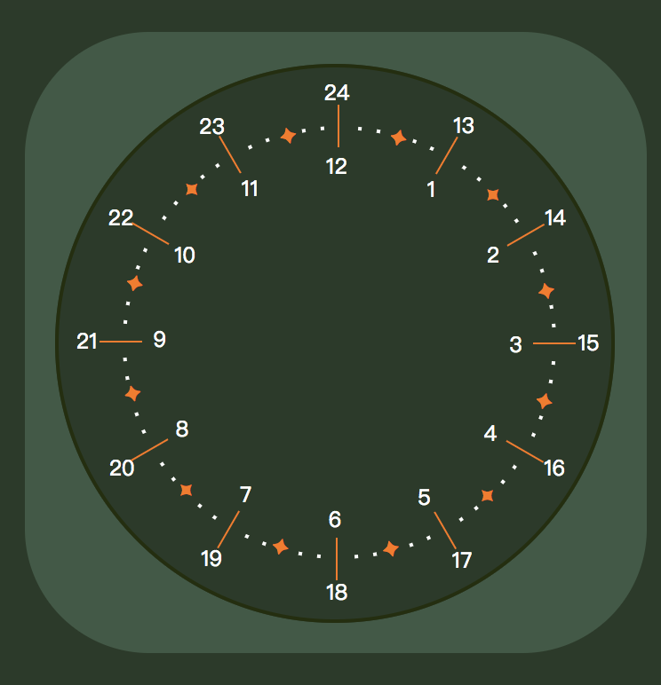
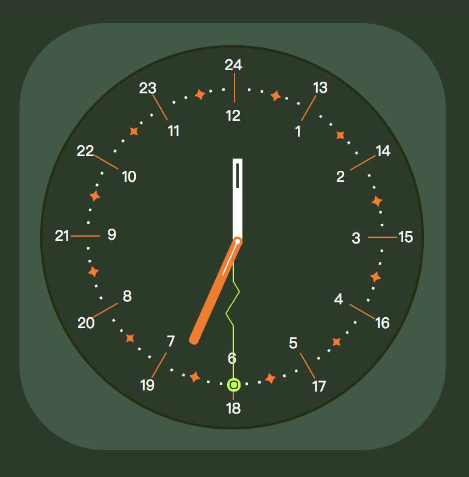

JS地下城：2F-時鐘

規則
- 【特定技術】需使用 JS 原生語法的 getDate() 撈取時間，不可用套件
- 【特定技術】需使用 JS 原生語法的 setTimeout() 或 setInterval()，持續讓秒針、分針、時針能夠以台北時區移動
這次時鐘的關卡，之前js30 天的第二單元已經練習過了，所以這次主要挑戰的就是用 css 畫出設計稿上的內容!!!
準備
寫這個題目時 也算晚了，所以在這之前已經有很多大大的作品在上面了，看到幾位大大的時鐘都是使用三角函式算角度去繪製出來，所以也爬了一些三角函數的教學，奈何資質駑鈍，看了好久 怎麼看都看不懂…… 角度怎麼麼算都算不出來… (真的很灰心啊…
所以決定使用土法煉鋼的方式來處理
開始
首先 當然是先把外框簡單的部份先畫完
再來就是處理刻度，算了一下刻度有 72 格 (普通不是都 60 格嗎?)
不管了 沒關係
畫刻度
先設定中心點
在 css3 裡 有個 transform-origin 它可以定中心點 以這個點為中心做旋轉
先試著畫出一個刻度 把位置找出來 如圖

再試著使用 css3 的
transform: rotate 轉轉看 看是不是如自己所想的轉動方向
接著用 js 下去繪製出其他 71 個刻度
果然沒問題 是我要的!
接著把刻度的間距拉開
一個圓是 360 度 (這個國小有讀過 我還記得 XDDD)
360 / 72 得證 每個刻度的間距是 5
在 for 迴圈裡 每個刻度再加上 5 的距離 如圖
接下來就是一連串的樣式處理啦
利用 css 的 nth-child( 6n+1 ) (以 6 為單位取第 1 個… 以此類推
畫出如下圖

圖中的刻度的半經離圓心有點近，就使用
transform: translateY 將半徑拉開
把數字時間填上
都完成後 接著就將數字補上去( 再次遇到問題 )
原本想將 am 跟 pm 的數字 利用 css 的 data 屬性來顯示，但發現在 js 裡面不能更改 :before,:after的 css 樣式(調整樣式的原因是要修改數字的旋轉角度)，只能用 css 寫死，只好又放棄
老實的幫數字加上 tag
這裡要注意的一點是 要把數字放在刻度的下一層，以刻度當定位點 數字才能跟著刻度的角度放好
數字放上去後 如下圖

將數字轉正
花了一點時間下去找數字旋轉的角度的規則
原本是倒的字加上 180 度就會變成正的
所以就是 180 - i(第幾個) * 5(先前得到數值)
就能把所有數字轉正了
再來就是使用 css 的 top left 將數字拉開了，轉到想要的位置
成果如下!!

畫秒針
接下來就是用 css 處理時鐘的指針了
時針 跟 分針較簡單 所以略過不提了
來說說複雜的秒針吧
困難點在於他中間有兩個小折痕
這裡我使用三角形來處理
在一個 tag 裡的 before after 分別寫上兩個三角形重疊 做出三角形的邊框
做兩個 另一個做水平鏡向處理 transform: scaleX(-1);
再來 就是花時間做微調了 成功!!
